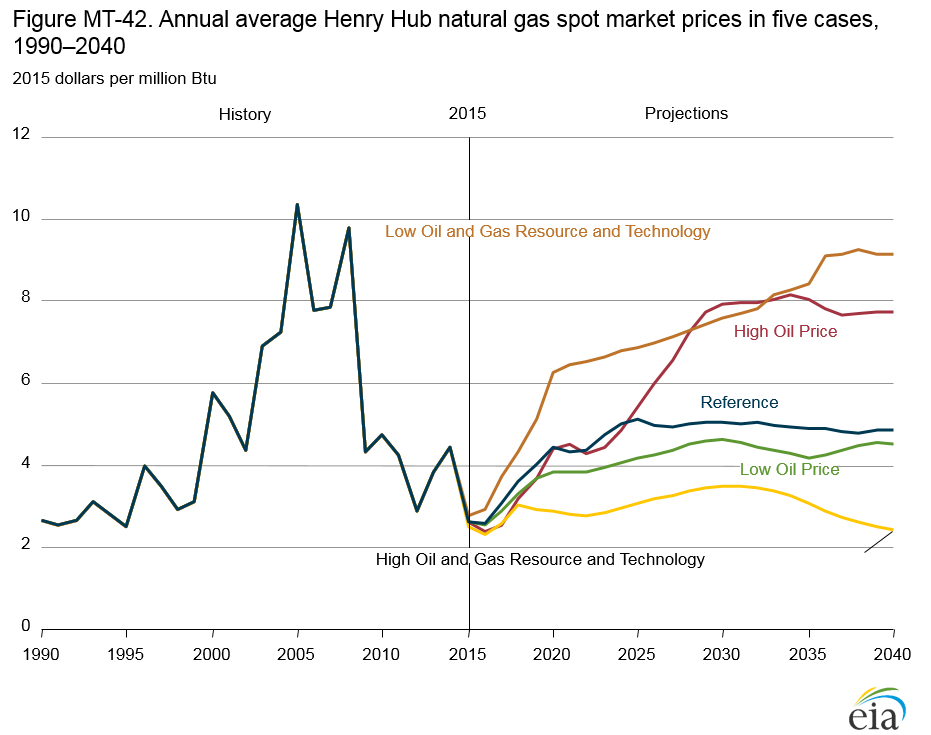
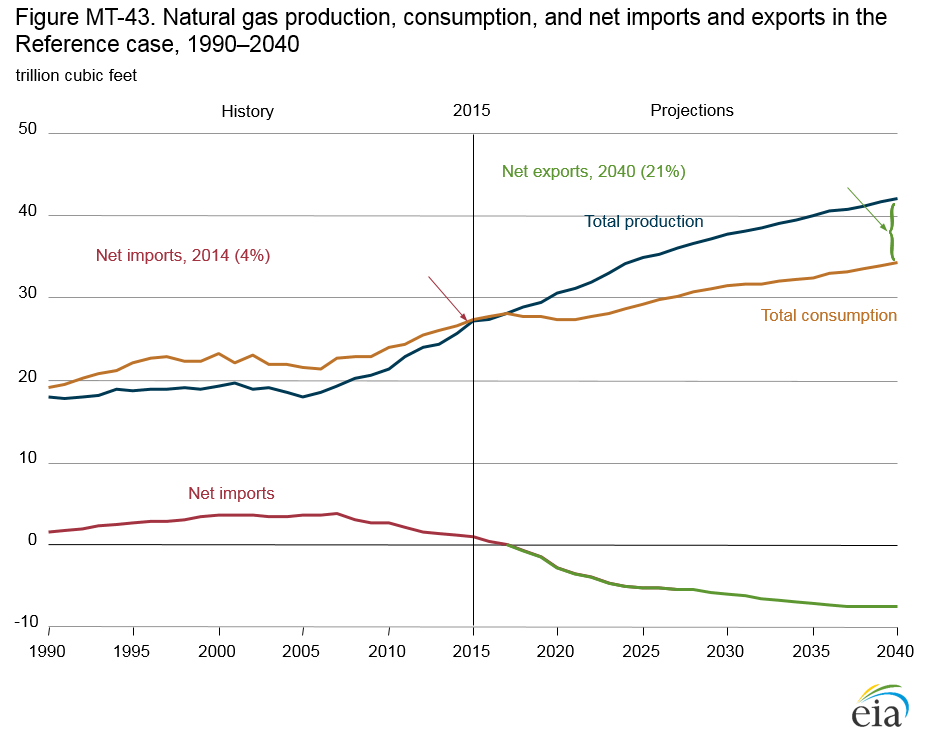
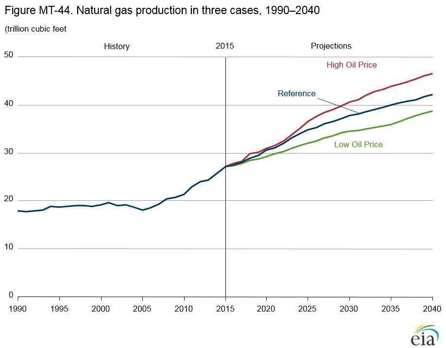
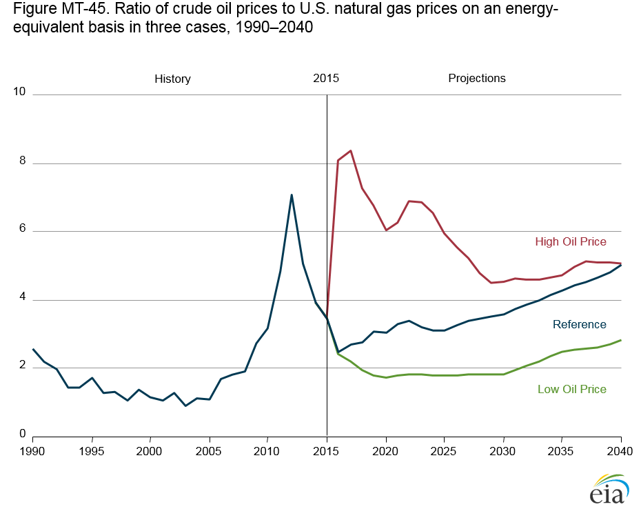
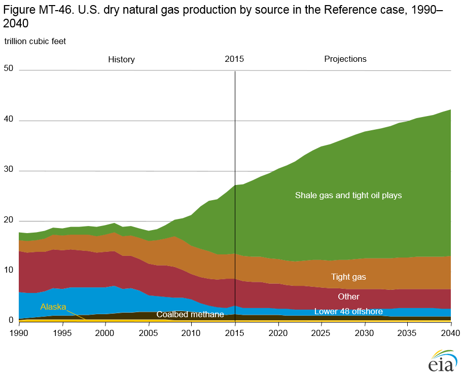
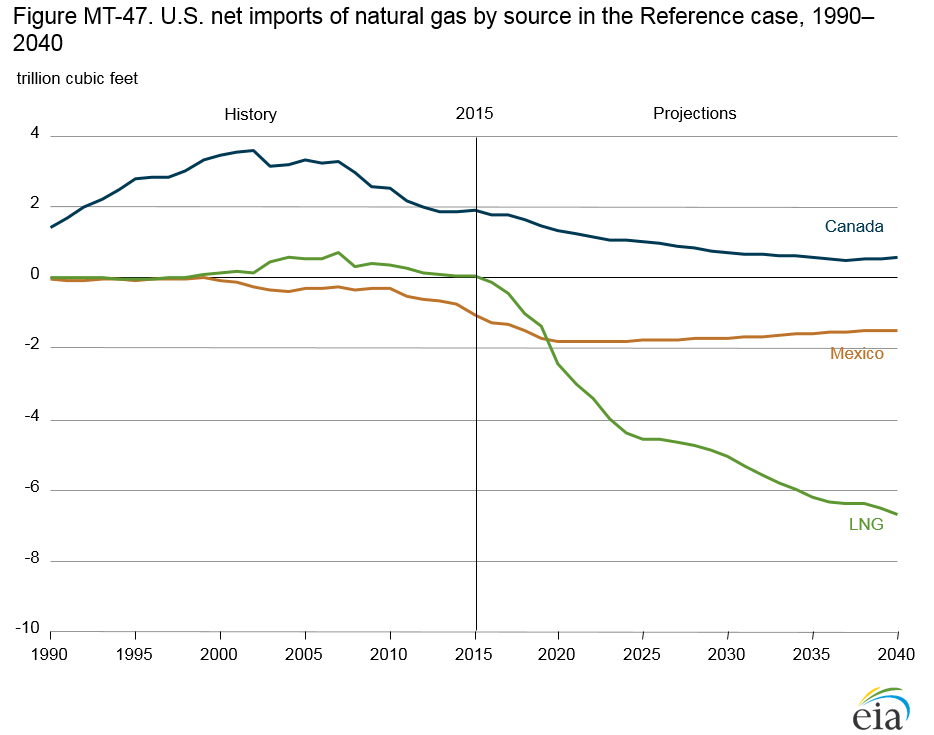
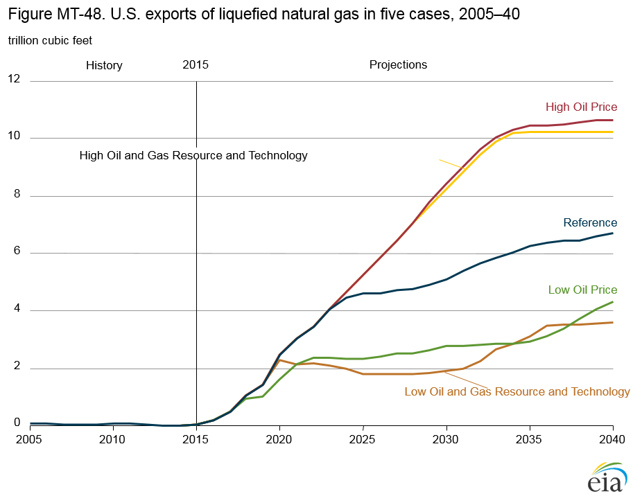
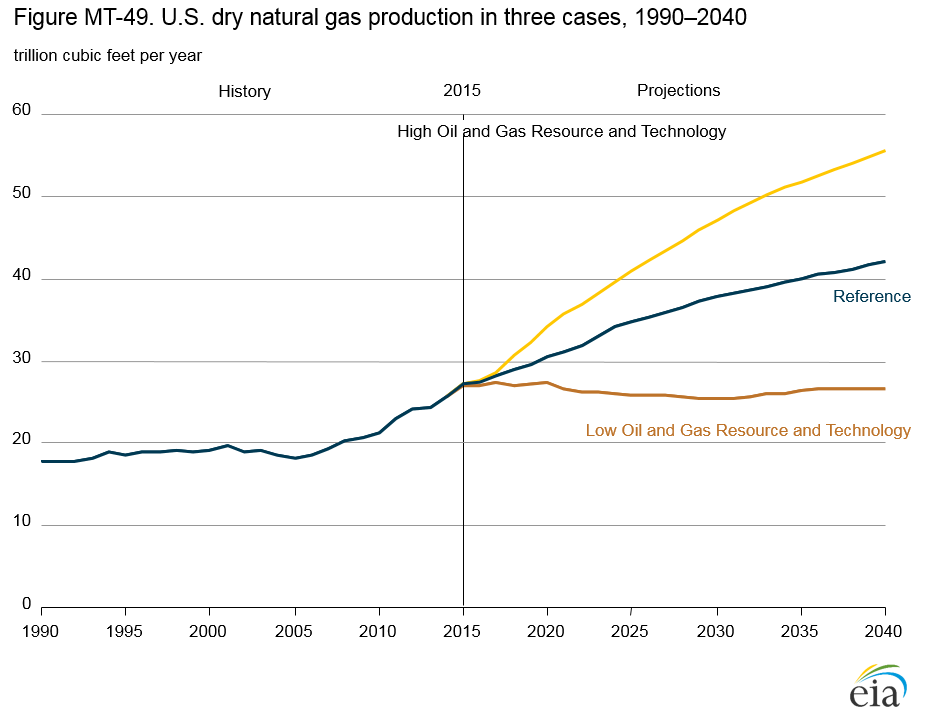
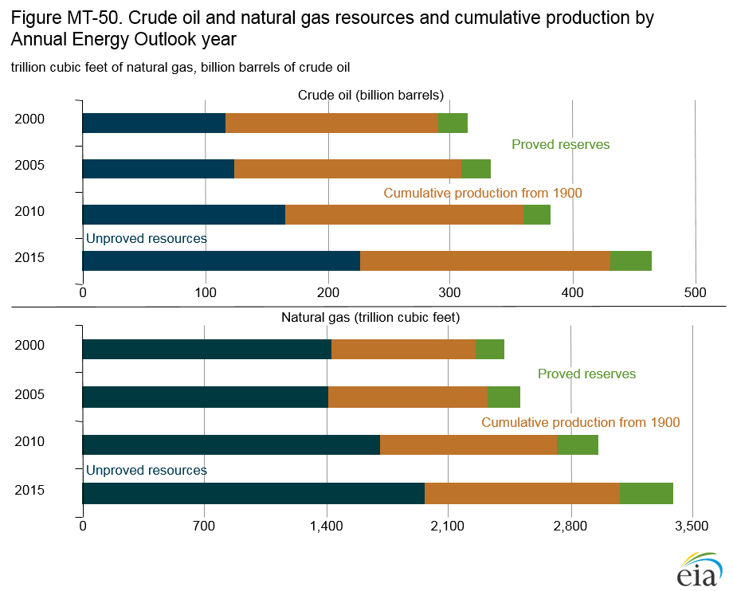

{kind=link}
{kind=link}
Annual Energy Outlook 2016
Full Release Date: September 15, 2016 | Next Release Date: January 2017 | full report
Market Trends: Natural gas
Natural gas prices depend on oil prices, technology improvement, and resource recovery rates
Across the AEO2016 cases, the average annual Henry Hub spot price for natural gas in 2040 (Figure MT-42) ranges from $2.40–$9.20/million British thermal units (Btu). In the Reference case, average annual U.S. natural gas prices at the Henry Hub remain at about $5.00/million Btu in 2015 dollars through 2040. Crude oil prices affect natural gas prices through changes in consumption and exports, although changes on the supply side, such as increased production of associated-dissolved gas, balance out those factors.

figure data
In the High Oil Price case, U.S. exports of liquefied natural gas (LNG) begin to exceed the Reference case total in 2024, and in 2030 they total 8.5 Tcf, or 3.3 Tcf more than in the Reference case. In response, the Henry Hub spot price begins to rise above Reference case levels in 2025, from more than $5.40/million Btu in 2025 to about $7.90/million Btu in 2030. The higher prices are sustained by increased consumption in the transportation sector, where a high price differential between oil and natural gas favors the use of natural gas over diesel. Natural gas use for gas-to-liquids production also increases over the projection period.
In the Low Oil Price case, the Henry Hub spot price averages about $0.50/million Btu lower than in the Reference case throughout the projection. Because of the relatively small price differential between crude oil and natural gas in the Low Oil Price case, U.S. exports of LNG from 2025–40 are about 50% lower in the Low Oil Price case than in the Reference case, and natural gas consumption is lower in both the industrial and transportation sectors.
Natural gas prices are affected by rates of resource recovery from oil and natural gas wells and by technology improvements, which affect total natural gas production and the associated costs. In the High Oil and Gas Resource and Technology case, with higher initial estimated ultimate recovery per well and more rapid technology improvements, total dry natural gas production in 2040 is 32% higher than in the Reference case. In the Low Oil and Gas Resource and Technology case, with slower rates of resource recovery and technology improvement, total dry natural gas production in 2040 is 37% less than in the Reference case. As a result, U.S. natural gas prices are lowest in the High Oil and Gas Resource and Technology case, ranging from about $2.45 to $3.50/million Btu over the projection period, and highest in the Low Oil and Gas Resource and Technology case, where prices rise quickly to more than $6.25/million Btu in 2020 and to just under $9.20/million Btu in 2040.
Ample natural gas supply is adequate to meet growth in both export and domestic markets
In the Reference case, U.S. natural gas production is sufficient to meet increases in demand for both domestic consumption and net exports through 2040, and Henry Hub spot prices remain relatively low (Figure MT-43). The United States transitions from being a net importer of 1.0 trillion cubic feet (Tcf) of natural gas in 2015, or 3% of U.S. total natural gas supply, to a net exporter in 2018. In 2040, net U.S. exports of natural gas total 7.5 Tcf, or 18% of dry natural gas production. Almost 50% (3.6 Tcf) of the growth in net exports occurs by 2021, as liquefied natural gas (LNG). Most of the LNG export capacity is already under construction. After 2021, U.S. net exports grow at a more moderate average rate of 4%/year.

figure data
Total U.S. natural gas consumption grows by 0.9%/year from 2015–40. After falling from 2017–21 as consumption in the electric power sector drops by 1.4 Tcf, total natural gas consumption rises steadily to 34.4 Tcf in 2040. Natural gas production increases in the reference case by an average of 1.8%/year, from 27.2 Tcf in 2015 to 42.1 Tcf in 2040. Technology improvements in the development of shale gas resources continue, which results in higher rates of recovery at lower costs. Production growth holds down natural gas prices, stimulating demand for U.S. natural gas in the United States (particularly in the electric power sector) and in overseas markets. Most U.S. natural gas exports to overseas markets are delivered as LNG. Through 2020, Mexico is also a rapidly growing market for U.S. natural gas. Canada continues to be a modest net exporter to the United States throughout the projection.
U.S. natural gas production, use, and exports are affected by oil prices
Crude oil prices affect U.S. natural gas production primarily through changes in natural gas consumption and exports. In 2040, total natural gas production varies by 7.8 trillion cubic feet (Tcf) across the oil price cases (Figure MT-44), liquefied natural gas (LNG) exports vary by 6.3 Tcf (plus 0.6 Tcf used for liquefaction), and natural gas use in the transportation sector varies by 1.4 Tcf.

figure data
In the High Oil Price case, the difference between the crude oil price and the natural gas price in 2022 is about $25/million British thermal unit (Btu), compared with $10/million Btu in the Reference case. The larger difference in the High Oil Price case creates more incentive for direct use of natural gas in transportation, and for conversion to LNG for export, than in the Reference case. The opposite occurs in the Low Oil Price case: the difference between the crude oil price and the natural gas price in 2033 is about $5/million Btu, and the smaller price difference results in virtually no incentive for additional natural gas consumption in the transportation sector or for more LNG exports.
Natural gas production levels are similar in the Reference and High Oil Price cases from 2015–23. In both cases, most LNG exports come from liquefaction plants currently under construction. Outside the United States—particularly in Australia—significant liquefaction capacity is coming online or is under construction. The near-term increase in LNG supply is expected to weaken the relationship between international oil and natural gas prices. As world demand for LNG grows, the economics of LNG exports from the United States are expected to improve in the Reference case. That transition is projected to occur more quickly in the High Oil Price case. In the Low Oil Price case, continued low oil prices act to hold down international natural gas prices, limiting U.S. LNG export capacity to the total under construction before 2035 and also limiting the utilization of existing capacity.
In all the AEO2016 cases, oil prices are higher than natural gas prices through 2040
The oil-to-gas price ratio, on an energy-equivalent basis, is used as an indicator of the extent to which oil competes with natural gas in most applications. From 1990–2005, the downward trend in the oil-to-gas price ratio reflected declining crude oil prices and a gradual rise in natural gas prices. Natural gas use for electric power generation nearly doubled over that period. With stagnant domestic natural gas production, all incremental natural gas supply to the U.S. market came from imports. From 1995–2005, real prices for natural gas at the Henry Hub quadrupled.
After 2008, changes in the U.S. natural gas market resulted in a rapid and long-lasting decoupling of domestic crude oil prices from natural gas prices. As oil prices fell from their 2008 highs, natural gas prices declined even faster. When crude oil prices began to rise again, natural gas prices continued to decline, averaging about $2.85/million British thermal units (Btu) in 2012 compared with average crude oil prices at $20.10/million Btu. At that point, the oil-to-gas price ratio was 7.1 (Figure MT-45).

figure data
In the AEO2016 Reference case, the prices of liquid fuels continue to exceed natural gas prices from 2015–40. The disparity between Brent crude oil prices and Henry Hub natural gas prices on an energy-equivalent basis leads to a gradual increase in the oil-to-gas price ratio, from 3.5 in 2015 to 5.0 in 2040. In the High Oil Price case, the oil-to-gas price ratio grows to 8.3 in 2017 before declining gradually to 5.1 in 2040, as high oil prices spur U.S. crude oil development, which increases associated natural gas production and depresses natural gas prices in the short to medium term. Crude oil prices do not rebound in the Low Oil Price case but instead increase at a rate close to the inflation rate.
Natural gas production from shale gas and tight oil plays leads growth in U.S. natural gas supply
The 55% increase in dry natural gas production from 2015–40 in the AEO2016 Reference case results from increased development of shale gas and tight oil plays, tight gas, and offshore natural gas resources (Figure MT-46). Production from shale gas and tight oil plays is the largest contributor, growing by more than 15 trillion cubic feet (Tcf), from 13.6 Tcf in 2015 to 29.0 Tcf in 2040. The shale gas and tight oil play share of total U.S. dry natural gas production increases from 50% in 2015 to 69% in 2040. Although tight gas production increases by 31% from 2015 to 2040, its share of total production remains nearly constant.

figure data
Tight gas production is the second-largest source of domestic natural gas supply in the Reference case, providing 18% of total supply in 2015 and 16% of total supply in 2040. Lower 48 onshore production from all sources other than tight and shale gas formations declines from 6.6 Tcf in 2015 to 4.6 Tcf in 2040, when it accounts for about 11% of total domestic production, down from 24% in 2015.
Offshore natural gas production in the United States averages about 1.4 Tcf/year from 2015–20 before declining to 1.2 Tcf in 2027, reflecting declines in production from legacy offshore fields. Production of coalbed methane also declines. Offshore natural gas production increases to 1.7 Tcf in 2040 as new discoveries offset declines in legacy fields. Alaska’s natural gas production remains relatively constant throughout the projection period, averaging 0.3 Tcf/year.
U.S. exports of liquefied natural gas increase to 4.6 trillion cubic feet in 2025 and to 6.7 trillion cubic feet in 2040
In the AEO2016 Reference case, the United States becomes a net exporter of natural gas in 2018, with net exports of 5.3 trillion cubic feet (Tcf) in 2025 and 7.5 Tcf in 2040. Liquefied natural gas (LNG) exports from the United States account for most of the growth (Figure MT-47). With the first LNG export terminal in the United States opening in 2016, LNG exports grow to 2.5 Tcf in 2020, 4.6 Tcf in 2025, and 6.7 Tcf in 2040. Although the five LNG export projects currently under construction in the Mid-Atlantic and Gulf Coast regions will provide total export capacity of 2.9 Tcf/year, additional capacity will be needed to meet the Reference case projection. U.S. natural gas is competitive in international markets, because Henry Hub spot natural gas prices are relatively low in comparison to international prices. However, the U.S. competitive advantage will also depend on world oil prices, growth of global LNG supply, international natural gas production, and international demand for natural gas, particularly in China and other key markets.

figure data
Natural gas pipeline exports from the United States to Mexico continue to increase in the near term in the Reference case, from 1.0 Tcf in 2015 to 1.8 Tcf in 2020. Although Mexico’s domestic natural gas production is declining, its consumption is increasing, particularly in the electric power sector. Several pipeline projects currently under construction in Mexico are expected to come online between 2016 and 2018, opening new regional markets for natural gas use. After 2020, U.S. natural gas pipeline exports to Mexico decrease gradually to 1.5 Tcf in 2040, reflecting new oil and natural gas production projects and increases in the use of renewable energy for electric power generation in Mexico.
Net imports from Canada to the United States continue to decline in the Reference case, from 1.9 Tcf in 2015 to 0.6 Tcf in 2040. The United States maintains its current export volume of 0.7 Tcf, largely into eastern Canada, through 2040. Natural gas imports from western Canada to the United States decline in the Reference case as relatively low U.S. natural gas prices and Canada’s proximity to major U.S. markets make natural gas produced in the United States more competitive.
Liquefied natural gas export growth depends on oil price and productivity assumptions
In the AEO2016 Reference case, growing natural gas production from shale gas and tight oil formations at relatively low prices supports an increase in U.S. liquefied natural gas (LNG) exports of 6.7 trillion cubic feet (Tcf) from 2015–40, representing 93% of the total increase in U.S. natural gas exports over the period. In the United States, LNG exports surpass LNG imports beginning in 2016 and continue to increase through 2040. Prices increase rapidly until 2020 as the liquefaction facilities currently under construction begin operation, allowing rapid growth in natural gas exports, but the rate of increase slows somewhat from 2021–26 and more rapidly thereafter as growing LNG exports from the United States cause natural gas prices to decrease in the rest of the world.
Exports of LNG from the United States vary significantly among
the AEO2016 cases. In the High Oil Price case, both global LNG
demand and LNG prices are higher than in the Reference case,
and LNG exports from the United States increase to 10.5 Tcf in
2035 and remain near that level through 2040 (Figure MT-48).
In the Low Oil Price case, gross LNG exports from the United
States increase to 2.2 Tcf in 2021, remain above the export
levels in the Low Oil and Gas Resource and Technology case
through 2034, and then increase to 4.3 Tcf in 2040. In general,
low oil prices reduce the incentive for expanding natural gas
markets and result in decreasing global LNG prices; however,
rising oil prices in the Low Oil Price case contribute to an
eventual increase in LNG exports.

figure data
In the High Oil and Gas Resource and Technology case, large production increases at low costs result in decreasing U.S. natural gas prices, and LNG exports grow to 10.3 Tcf in 2035.
In the Low Oil and Gas Resource and Technology case, limited technology improvement results in lower natural gas production and higher domestic natural gas prices. Gross LNG exports increase to 2.3 Tcf in 2020 in the Low Oil and Gas Resource and Technology case but remain below export levels in the Low Oil Price case until 2035.
Natural gas production rates depend on resource availability and production costs
Prospects for natural gas production from tight oil and shale gas resources are uncertain because large portions of the formations have little or no production history and because future technology could increase well productivity while reducing costs. The High and Low Oil and Gas Resource and Technology cases illustrate potential impacts of changes in Reference case assumptions about technology advances and resource size and quality on natural gas demand, imports, and prices. These cases do not represent lower or upper bounds for production and do not have associated probabilities of occurrence.
The High Oil and Gas Resource and Technology case assumes
higher estimates of unproved Alaska resources, offshore lower
48 resources, and onshore lower 48 tight oil, tight gas, and shale
gas resources than in the Reference case. These assumptions
are based on higher initial estimated ultimate recovery per
well, larger volumes of onshore lower 48 tight oil and shale
gas resources, and higher rates of long-term technology
improvement that lead to reductions in drilling and operating
costs and higher production levels. Higher well productivity
reduces development and production costs per unit, resulting
in more resource development than in the Reference case. With
more abundant shale gas resources at lower costs, cumulative
dry gas production is 1,115 trillion cubic feet (Tcf) from 2015–40, compared with 920 Tcf in the Reference case. In the High
Oil and Gas Resource and Technology case, dry natural gas
production is nearly 56 Tcf in 2040, compared with 42 Tcf in
the Reference case (Figure MT-49). In the Low Oil and Gas
Resource and Technology case, which assumes lower tight oil, tight gas, and shale gas EURs per well and lower rates of
technology improvement than in the Reference case, total
production of dry natural gas remains between 25 and 27 Tcf
per year through 2040, while shale gas production increases to
15 Tcf in 2040 from 13.3 Tcf in 2015, and cumulative shale gas
production is 383 Tcf over the 2015–40 period.

figure data
Crude oil and natural gas supply reflects new representation of technology advancement
The AEO2016 Reference case uses a simplified approach to
model the impacts of technology advances on U.S. oil and natural
gas production. The Reference case includes assumptions
about ongoing innovation in upstream technologies and
reflects the average annual growth rate between AEO2000
and AEO2015 in natural gas and oil resources and the
cumulative production from 1900 (Figure MT-50). The new
representation of technology advances divides areas in tight
oil, tight gas, and shale gas plays into two tiers with different
technology change rate assumptions. Tier 1 encompasses
areas within these plays that are under active development.
The estimated ultimate recovery (EUR) per well for Tier 1 areas
have a 1% annual growth rate. Tier 2 encompasses areas not
yet developed and includes, for example, large areas of the
Utica Shale in the Northeast. The EUR per well in Tier 2 areas
has a 3% annual growth rate until development begins. Once
development begins, the Tier 2 areas revert to a 1% annual EUR
growth rate. These assumptions reflect the combined effects
of diminishing returns per well from decreasing well spacing as
development progresses, market penetration of technologies,
and application of industry practices and technologies at the
time of development.

figure data
Annual EUR growth rates for conventional, enhanced oil recovery, and coalbed methane sources are 0.25%. Technology improvements also affect drilling and operating costs. Both Tier 1 and Tier 2 areas are assumed to have 1% annual declines in drilling costs and 0.5% annual declines in operating costs as a result of advances in technology and industry practices. Conventional oil recovery, enhanced oil recovery, and coalbed methane sources are assumed to have 0.25% annual declines in drilling costs and operating costs.
In This Section
- Natural gas prices depend on oil prices, technology improvement, and resource recovery rates
- Ample natural gas supply is adequate to meet growth in both export and domestic markets
- U.S. natural gas production, use, and exports are affected by oil prices
- In all the AEO2016 cases, oil prices are higher than natural gas prices through 2040
- Natural gas production from shale gas and tight oil plays leads growth in U.S. natural gas supply
- U.S. exports of liquefied natural gas increase to 4.6 trillion cubic feet in 2025 and to 6.7 trillion cubic feet in 2040
- Liquefied natural gas export growth depends on oil price and productivity assumptions
- Natural gas production rates depend on resource availability and production costs
- Crude oil and natural gas supply reflects new representation of technology advancement
Interactive Table Viewer ›
Provides custom data views of all AEO2016 cases. All available cases can be charted and the data for them downloaded.